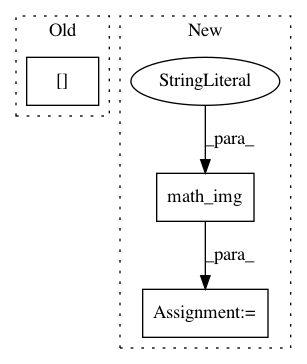

01d18e835815feedeac2fbeff8025cdd94128eaa,pynets/fmri/clustools.py,NilParcellate,create_clean_mask,#NilParcellate#,411
Before Change
// Ensure mask does not inclue voxels outside of the brain
self._masked_fmri_vol = np.asarray(self._func_img.dataobj)[:, :, :, 0]
self._masked_fmri_vol = self._masked_fmri_vol.astype("bool")
self._mask_data[~self._masked_fmri_vol] = 0
del self._masked_fmri_vol
self._clust_mask_corr = "%s%s%s%s" % (self._dir_path, "/", mask_name, ".nii")
self._clust_mask_corr_img = nib.Nifti1Image(self._mask_data, affine=self._clust_mask_img.affine,
After Change
self._mask_img.uncache()
mask_res_img.uncache()
else:
self._clust_mask_corr_img = intersect_masks([math_img("img > 0", img=func_vol_img),
math_img("img > 0", img=clust_mask_res_img)],
threshold=1, connected=False)
nib.save(self._clust_mask_corr_img, "%s%s%s%s" % (self._dir_path, "/", mask_name, ".nii"))
func_vol_img.uncache()
clust_mask_res_img.uncache()
In pattern: SUPERPATTERN
Frequency: 3
Non-data size: 3
Instances
Project Name: dPys/PyNets
Commit Name: 01d18e835815feedeac2fbeff8025cdd94128eaa
Time: 2019-12-09
Author: dpisner@utexas.edu
File Name: pynets/fmri/clustools.py
Class Name: NilParcellate
Method Name: create_clean_mask
Project Name: nilearn/nilearn
Commit Name: 6c929b84f39a8c683808c8a16285e53bcd1262d2
Time: 2018-03-08
Author: dkamalakarreddy@gmail.com
File Name: examples/03_connectivity/plot_rest_clustering.py
Class Name:
Method Name:
Project Name: dPys/PyNets
Commit Name: 52bdab14484a69594976e84afc70a0790f679588
Time: 2019-12-28
Author: dpisner@utexas.edu
File Name: pynets/registration/register.py
Class Name: DmriReg
Method Name: tissue2dwi_align